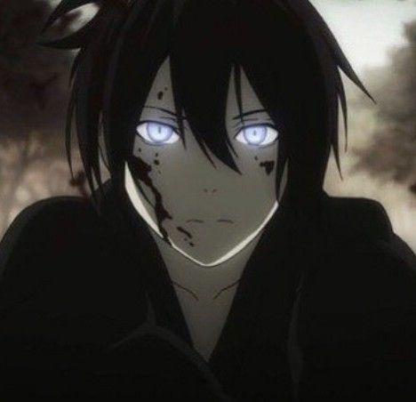
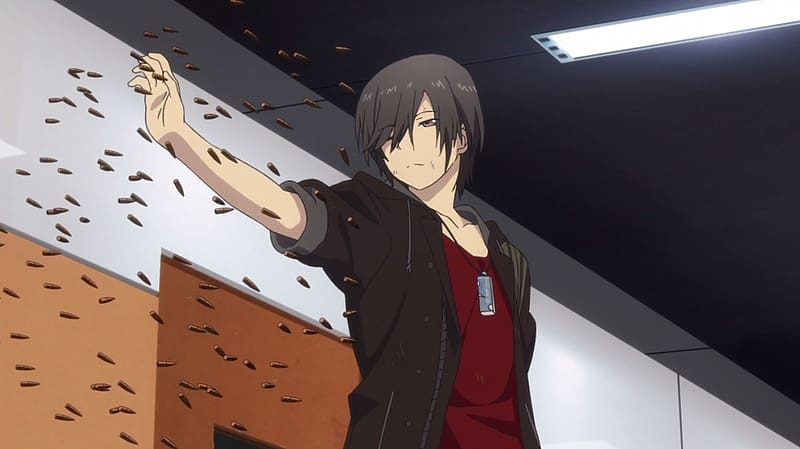
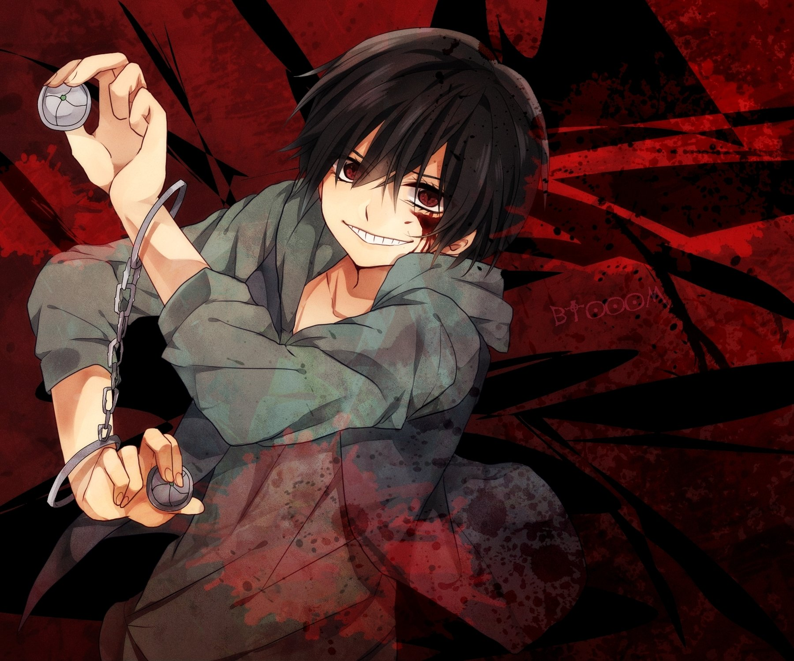
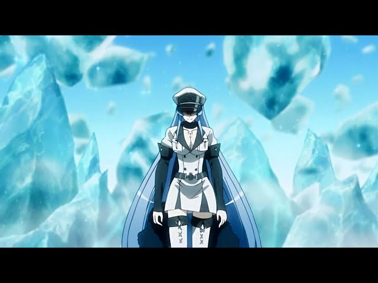
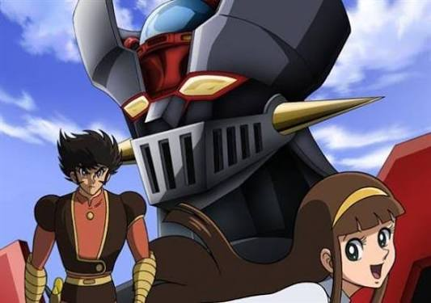

Yato es un dios de la calamidad de capa caída: no tiene templo, sus seguidores lo olvidaron y sobrevive haciendo trabajos domésticos baratos por monedas de cinco yenes para no desaparecer del mapa. Su destino cambia cuando una chica de secundaria intenta salvarlo de ser atropellado, quedando atrapada entre el mundo de los vivos y el de los muertos. Juntos desentierran un inframundo oscuro lleno de monstruos espirituales, traiciones divinas y un pasado sangriento que Yato intenta enterrar desesperadamente. Una joya sobrenatural que equilibra comedia ácida con batallas desgarradoras.

En este mundo, algunos adolescentes desarrollan habilidades especiales durante la pubertad, pero todas tienen un defecto fatal. El protagonista, Yuu, puede poseer el cuerpo de cualquiera por solo cinco segundos, truco que usa para hacer trampa en la escuela y ser el chico perfecto. Su farsa se cae cuando es descubierto por una organización secreta que protege a jóvenes como él de ser cazados por científicos del gobierno. Lo que empieza como una divertida comedia escolar da un giro oscuro de 180 grados, convirtiéndose en un thriller psicológico de viajes en el tiempo, colapso mental y sacrificios brutales a escala global.

Ryouta es un desempleado adicto a un juego de combate online donde las únicas armas son bombas químicas y magnéticas. Su vida da un vuelco de pesadilla cuando despierta atrapado en una isla tropical real, dándose cuenta de que alguien recreó el videojuego a escala humana. Para salir vivo, debe asesinar a otros participantes reales y robar sus cristales implantados en la piel. Es una carrera frenética por la supervivencia que explora lo peor de la naturaleza humana, donde la paranoia de no saber quién te va a hacer explotar por la espalda te mantiene sin respirar.

Un joven espadachín viaja a la capital con el sueño de salvar a su pueblo de la pobreza, solo para descubrir que la ciudad es un nido podrido de tortura, sadismo y corrupción política. Tras un golpe de realidad brutal, es reclutado por Night Raid, un grupo de asesinos rebeldes armados con reliquias imperiales malditas. Aquí no hay "armadura de guion": el anime te advierte desde el inicio que en una guerra real la gente muere de forma horrorosa, desmantelando los clichés del género y entregando batallas a muerte donde absolutamente nadie tiene asegurada la supervivencia.

Kouji Kabuto hereda de su abuelo asesinado un titán de metal alienígena con un poder destructivo inimaginable: Mazinger Z. La premisa es brutal y directa: el robot no se maneja solo ni a control remoto; Kouji debe acoplar su nave directamente en la cabeza del coloso, convirtiéndose en el cerebro de un arma de destrucción masiva. Enfrentando al desquiciado Dr. Hell y su ejército de bestias mecánicas, este clásico inyecta una escala de poder colosal y una furia metálica que definió para siempre cómo debe sentirse una verdadera batalla de titanes.
A continuación dejamos un audio que te recordará tu infancia
